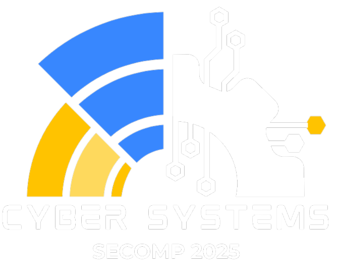

Cyber Systems
XXII Semana da Computação
XXII Semana da Computação
13, 14, 15 e 16 de Maio

Auditório Paulo Petrola
Sobre o evento
Promovida desde 2003 pelo curso de Ciência da Computação, a Semana da Computação (SECOMP) reúne vários eventos e atividades, com o intuito de promover uma experiência produtiva sobre o mercado de trabalho na área de Computação, assim como apresentar algumas inovações tecnológicas, tendências e perspectivas.